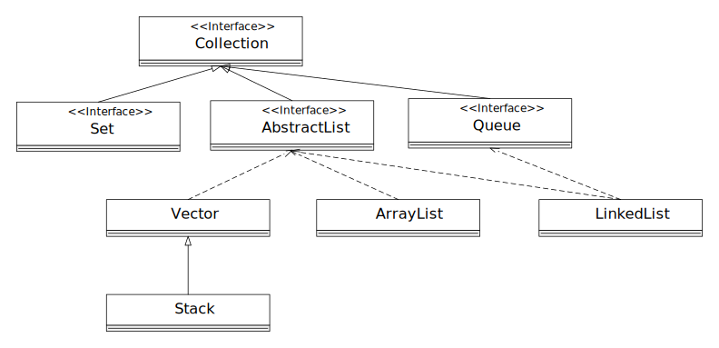
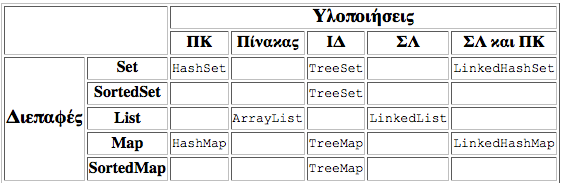
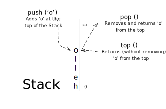

Μία συμβολοσειρα (String) είναι μια σειρά από χαρακτήρες. Στην java τα string είναι
αντικείμενα της κλάσης String.
Οι συμβολοσειρές είναι σταθερές - δηλαδή, οι τιμές τους δεν αλλάζουν μετά την
δημιουργεία τους. Σε αντίθεση, οι Stringbuffer έχουν μεταβλητό μήκος και τιμές
χαρακτήρων.
Όπως και για την δημιουργία άλλων αντικειμένων, έτσι και για να δημιουργήσουμε
αντικείμενα τύπου String χρειάζεται να χρησιμοποιήσουμε τη λέξη new και να
επικαλεστούμε τον κατασκευαστή.
char[] helloArray = {'h', 'e', 'l', 'l', 'o', '!'};
String helloStr = new String(helloArray);
System.out.println(helloStr);Το μέγεθος μία συμβολοσειράς επιστρέφεται με το κάλεσμα της συνάρτησεις length()
String h = "hello world!";
int l = h.lenght();Μία αλληλουχία (concatenation) από συμβολοσειρές μπορεί να καλεστεί ως εξής:
String h = "hello world";
System.out.println("This is an example: " + h);Για την μετατροπή ενός αριθμού σε συμοβολοσειρά καλούμε την εξής συνάρτηση:
int i = 600;
String s = Integer.toString(i); Οι θέσεις μίας συμβολοσειράς αριθμούνται από το 0. Η μη ύπαρξη θέσης συμβολίζεται με το -1.
h e l l o
0 1 2 3 4Για να ελέξουμε εάν μία συμβολοσειρά είναι τμήμα μίας άλλης, μπορούμε να χρησιμοποιήσουμε την
indexOf(String str2)
Η σύγκριση 2 συμβολοσειρών γίνεται είτε με την equals(Object Obj) είτε λεξικογραφικά με την
compareTo(String str2)
if (str1.equals(str2))
System.out.println(str1 + " " + str2);// Return sustring "world"
// H e l l o w o r l d
// 0 1 2 3 4 5 6 7 8 9 10
String h = new String("Hello world");
h.substring(6,11);// Split using the underscore
String word = new String("Hello_Programming_II");
String[] splitThisString = word.split("_");
// Split using the whitespace
String word2 = new String(Hello Programming II);
String[] splitThisOneToo = word2.split("\\s+");
// "\\s+" μπορεί να χρησιμοποιηθεί για κενά όπως \n, \t, κτλ.String word2 = new String(“Hello Programming II”);
String[] splitThisNow = word2.split(“\\s+”, 1);
System.out.println(splitThisNow.length);StringBuffer str1 = new StringBuffer("Programming");
String str = " II";
str1.append(String str);StringBuffer sb = new StringBuffer("abcdefghijk");
sb.insert(3,"1234");StringBuffer delete(int start, int end)StringBuffer sb = new StringBuffer("abcdefghijk");
sb.replace(3, 8, "DONE");Μία συλλογή (collection) είναι ένα σύνολο από αντικείμενα.
Ένα πλαίσιο συλλογών (collection framework) υποστηρίζει την αρχιτεκτονικά
ομογένη παράσταση και χειρισμό των συλλογών, ανεξάρτητα από την υλοποιήση τους.


// class declaration according to Oracle
public class ArrayList<E> extends AbstractList<E> implements List<E>, .... {
// ...
}import java.util.ArrayList;
public class ArrayListDemo {
public static void main(String[] args) {
// Δήλωση ArrayList
ArrayList<Integer> myList = new ArrayList<>();
// πρόσθεσε στοιχεία στο τέλος της λίστας
myList.add(1);
myList.add(2);
myList.add(4);
System.out.println(myList);
// πρόσθεσε στοιχείο στην συγκεκριμένη θέση
myList.add(2, 3);
System.out.println(myList);
// έλεγχος αν υπάρχει το συγκεκριμένο στοιχείο
System.out.println("List contains 2? " + myList.contains(2) + "\n"
+ "List contains 0? " + myList.contains(0));
// διαγραφή όλων όλων των στοιχείων από την ArrayList
myList.clear();
System.out.println(myList);
}
}with output
[1, 2, 4]
[1, 2, 3, 4]
List contains 2? true
List contains 0? false
[]// class declaration according to Oracle
public class LinkedList<E> extends AbstractSequentialList<E> implements List<E>, Queue<E>, .... {
// ...
}
class Circle {
/* Linked-list nodes should have a reference of their own
type showing the next element in the list */
private Circle next;
Circle(){ this.next = null; }
public void setNext (Circle c) { this.next = c; }
public Circle getNext () { return this.next; }
/*
* Here follows the code of the original Circle class
* as presented in the Creating Classes session
*/
}
public class CircleList {
private Circle first_element;
CircleList() { this.first_element = null; }
public void addElement(Circle c) {
if(this.first_element == null) {
this.first_element = c;
} else {
Circle current_circle = this.first_element;
while (current_circle.getNext() != null) {
current_circle = current_circle.getNext();
}
current_circle.setNext(c);
}
}
}// The Stack class, as defined by Oracle
public class Stack<E> extends Vector<E> implements List<E>, ... {
// ...
}
import java.util.Stack;
public class StackDemo {
public static void main(String[] args) {
// Αρχικοποιήσει στοίβας
Stack<Integer> stack = new Stack<>();
// προσθέτουμε στοιχεία στην οροφή της στοίβας
stack.push(1);
stack.push(2);
stack.push(3);
stack.push(4);
System.out.println(stack);
// δες την τελευταία εισχώρηση
int top = stack.peek();
System.out.println("top element: " + top);
// αφαίρεση το τελευαίο στοιχεία και αποθήκευση
int first = stack.pop();
System.out.println("popped element: " + first + "\n" + stack);
// δες τελευταίο στοιχείο
top = stack.peek();
System.out.println("top element: " + top);
}
}